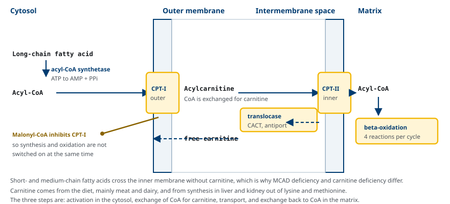
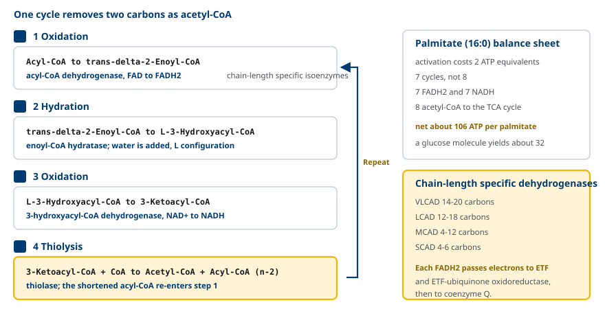
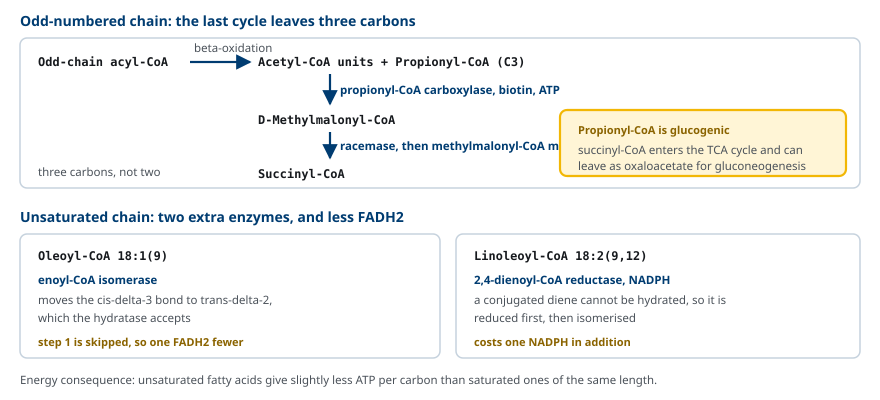
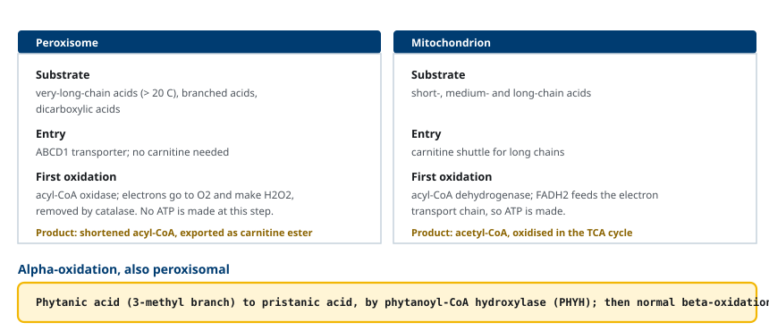
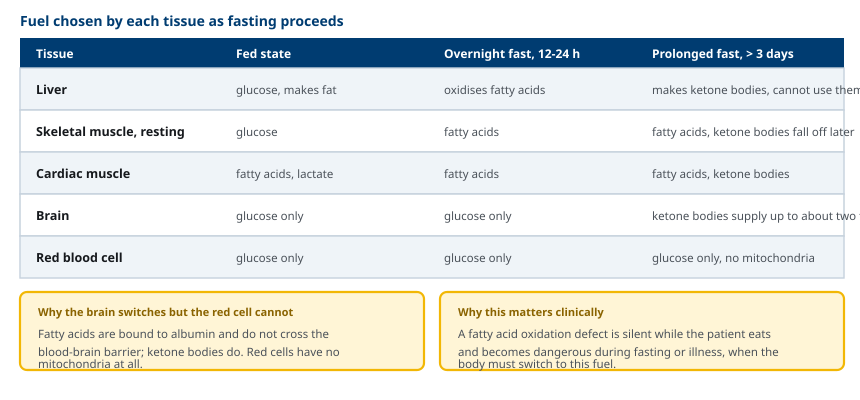

M02-W07-L03 · 대사생화학 · 지질대사
지방산 산화와 관련 대사 이상
Fatty Acid Oxidation and Its Disorders
학습목표
- 지방산 산화가 켜지는 생리적 조건과 그 조직 분포를 설명한다.
- 지방산의 활성화와 carnitine shuttle의 세 요소를 순서대로 설명한다.
- CPT-I이 malonyl-CoA에 의해 억제되는 의미를 합성 조절과 연결해 설명한다.
- beta-oxidation 네 반응을 효소·보조인자와 함께 쓰고 palmitate의 ATP 수지를 계산한다.
- 홀수 사슬과 불포화 지방산, very-long-chain 지방산의 처리 경로 차이를 설명한다.
- MCAD 결핍과 carnitine 결핍의 생화학적 소견을 구분하고 치료 원칙을 제시한다.
- 공복 기간에 따른 조직별 연료 선택을 설명하고 산화 장애가 왜 공복에서 발현하는지 연결한다.
선수지식
- M02-W07-L02 지방산 합성과 조절 — malonyl-CoA와 ACC의 조절
- M02-W05-L02 Pyruvate dehydrogenase와 TCA cycle — acetyl-CoA의 산화
- M02-W04-L03 산화적 인산화 — FADH₂와 NADH의 ATP 환산
강의 구성
- 1. 지방산 산화가 켜지는 조건과 조직
- 2. 지방산의 활성화와 미토콘드리아 진입
- 3. CPT-I의 조절: 합성과 산화의 전환점
- 4. beta-oxidation의 네 반응
- 5. 홀수 사슬, 불포화, very-long-chain 지방산
- 6. 지방산 산화 결핍: MCAD와 carnitine 결핍
- 7. 공복 시 조직별 연료 선택
- 8. 산화 경로의 이상이 만드는 전신 소견
1. 지방산 산화가 켜지는 조건과 조직
지방산 산화는 지방산을 두 탄소씩 잘라 acetyl-CoA로 만들고, 그 과정에서 FADH₂와 NADH를 생산하는 경로다. 잘라 내는 위치가 carboxyl 탄소에서 두 번째인 beta 탄소이므로 beta-oxidation이라고 부른다.
이 경로가 켜지는 조건은 지방산 합성이 켜지는 조건의 반대다. 혈중 insulin이 낮고 glucagon과 epinephrine이 높을 때, 즉 공복, 장시간 운동, 스트레스 상태에서 작동한다. 이때 지방조직에서 triacylglycerol이 분해되어 유리지방산이 혈액으로 나오고, 알부민에 결합한 상태로 조직에 전달된다.
조직별로 의존도가 다르다.
- 간: 산화와 동시에 케톤체를 만들어 다른 조직에 연료를 내보낸다.
- 심장근육: 평시에도 에너지의 60~70%를 지방산에서 얻는다.
- 골격근: 안정 시와 지속적 운동에서 주 연료로 쓴다.
- 뇌: 지방산을 쓰지 못한다. 유리지방산은 알부민에 결합해 있어 혈액뇌장벽을 넘지 못한다.
- 적혈구: 미토콘드리아가 없어 지방산 산화를 할 수 없다.
지방산이 좋은 연료인 까닭은 환원 상태 때문이다. 포도당은 탄소마다 hydroxyl기를 가져 이미 부분적으로 산화되어 있지만, 지방산의 사슬은 거의 완전히 환원된 탄화수소다. 그래서 산화 과정에서 더 많은 전자를 내놓는다. Palmitate 한 분자는 약 106 ATP에 해당하고 포도당 한 분자는 약 32 ATP에 해당한다.
2. 지방산의 활성화와 미토콘드리아 진입
세포 안으로 들어온 지방산은 그대로는 반응하지 않는다. 먼저 활성화되어야 한다.
Acyl-CoA synthetase(fatty acyl-CoA ligase)가 지방산의 carboxyl기에 CoA를 붙여 fatty acyl-CoA를 만든다. 이 반응은 ATP를 AMP와 pyrophosphate로 가르므로 고에너지 결합 두 개에 해당하는 비용이 든다. 효소는 소포체 막과 미토콘드리아 외막에 있고, 사슬 길이에 따라 여러 동위효소가 있다.
문제는 다음이다. 활성화는 세포질에서 일어나는데 beta-oxidation 효소는 미토콘드리아 기질에 있고, 긴 사슬 acyl-CoA는 내막을 통과하지 못한다. 이 문제를 carnitine shuttle이 해결한다.
Carnitine은 lysine과 methionine에서 간과 신장이 합성하는 작은 분자이고, 식사로도 섭취한다. 주 공급원은 육류와 유제품이므로 엄격한 채식에서 섭취가 적다.
셔틀은 세 요소로 구성된다.
1. CPT-I(carnitine palmitoyltransferase I) — 외막에 있다. Acyl-CoA의 acyl기를 carnitine에 옮겨 acylcarnitine을 만들고 CoA를 세포질에 돌려준다. 2. CACT(carnitine-acylcarnitine translocase) — 내막에 있는 역수송체다. Acylcarnitine을 안으로 들이고 유리 carnitine을 밖으로 내보낸다. 3. CPT-II — 내막의 기질 쪽 면에 있다. Acyl기를 다시 CoA에 옮겨 기질 안에서 acyl-CoA를 복원하고 carnitine을 풀어 준다.

사슬 길이에 따른 예외가 중요하다. Short-chain과 medium-chain 지방산은 carnitine 없이 내막을 통과한다. 그래서 carnitine 공급이 문제일 때도 medium-chain 지방산은 산화될 수 있고, 반대로 medium-chain을 처리하는 효소가 없으면 carnitine shuttle이 정상이어도 산화가 막힌다. 이 차이가 뒤에서 두 질환을 구분하는 근거가 된다.
3. CPT-I의 조절: 합성과 산화의 전환점
Carnitine shuttle의 rate-limiting step은 CPT-I이고, 이 효소는 malonyl-CoA에 의해 억제된다.
Malonyl-CoA는 acetyl-CoA carboxylase(ACC)의 산물이며 지방산 합성의 탄소 공여체다. 따라서 malonyl-CoA 농도는 "지금 지방산을 만들고 있는가"를 나타내는 지표다.
- 식후: insulin이 ACC를 활성화해 malonyl-CoA가 올라간다 → CPT-I이 억제된다 → 산화가 꺼지고 합성이 진행된다.
- 공복: glucagon과 AMPK가 ACC를 인산화해 끈다 → malonyl-CoA가 떨어진다 → CPT-I 억제가 풀린다 → 산화가 켜진다.
이 하나의 대사물질로 두 경로의 전환이 설명된다. 만든 지방산을 바로 태우는 무익한 순환이 생기지 않는 이유도 여기에 있다.
간과 근육의 CPT-I 동위효소는 malonyl-CoA에 대한 민감도가 다르다. 근육형(CPT-1B)이 간형(CPT-1A)보다 훨씬 예민하므로, 근육은 malonyl-CoA가 조금만 올라도 산화를 끈다. 근육은 지방산을 만들지 않지만 ACC를 가지고 있는데, 그 역할은 지방산 합성이 아니라 CPT-I을 조절하기 위한 malonyl-CoA 생산이다.
4. beta-oxidation의 네 반응
기질에 들어온 acyl-CoA는 네 반응으로 이루어진 순환을 거친다. 한 번 돌 때마다 사슬이 두 탄소 짧아지고 acetyl-CoA 한 분자가 떨어져 나온다.
1. 산화: acyl-CoA dehydrogenase가 alpha와 beta 탄소 사이에 이중결합을 만들어 trans-Δ²-enoyl-CoA를 만들고 FAD를 FADH₂로 환원한다. 2. 수화: enoyl-CoA hydratase가 물을 더해 L-3-hydroxyacyl-CoA를 만든다. 입체 구조가 L형인 점이 합성 경로의 D형 중간체와 다르다. 3. 산화: 3-hydroxyacyl-CoA dehydrogenase가 hydroxyl기를 keto기로 산화하고 NAD⁺를 NADH로 환원한다. 4. 티올 분해: thiolase가 CoA를 써서 결합을 끊어 acetyl-CoA와 두 탄소 짧아진 acyl-CoA를 내놓는다. 짧아진 acyl-CoA가 1번 반응으로 되돌아간다.

첫 반응의 dehydrogenase는 사슬 길이에 따라 서로 다른 동위효소가 담당한다. VLCAD(C14~C20), LCAD, MCAD(C4~C12), SCAD(C4~C6)가 있고, 이 분업 때문에 결핍 질환도 사슬 길이별로 나뉜다. 이 효소들의 FADH₂는 ETF(electron transfer flavoprotein)와 ETF-ubiquinone oxidoreductase를 거쳐 coenzyme Q로 전달된다.
Palmitate(16:0)의 수지를 계산한다.
- 활성화에 ATP 2개 상당을 소비한다.
- 순환은 7회다. 8회가 아니다. 마지막 순환에서 탄소 4개가 acetyl-CoA 두 개로 갈라지기 때문이다.
- FADH₂ 7개, NADH 7개가 생긴다.
- acetyl-CoA 8개가 TCA cycle로 들어간다.
이들을 합산하면 palmitate 한 분자당 약 106 ATP에 해당하는 에너지가 나온다.
5. 홀수 사슬, 불포화, very-long-chain 지방산
홀수 사슬 지방산은 마지막 순환에서 탄소 네 개가 아니라 다섯 개가 남으므로 acetyl-CoA 한 개와 탄소 세 개의 propionyl-CoA가 생긴다. Propionyl-CoA는 세 반응으로 TCA cycle에 합류한다.
1. Propionyl-CoA carboxylase(biotin, ATP)가 CO₂를 붙여 D-methylmalonyl-CoA를 만든다. 2. Racemase가 L형으로 바꾼다. 3. Methylmalonyl-CoA mutase(vitamin B₁₂ 유도체 보조인자)가 succinyl-CoA로 전환한다.
Succinyl-CoA는 TCA cycle의 중간체이고 oxaloacetate를 거쳐 gluconeogenesis에 쓰일 수 있다. 따라서 홀수 사슬 지방산의 세 탄소만은 당 생성에 기여한다. 짝수 사슬 지방산의 acetyl-CoA는 그렇지 못하다.
불포화 지방산은 이중결합의 위치와 기하 구조가 효소의 요구와 맞지 않아 두 효소가 추가로 필요하다.
- Enoyl-CoA isomerase: cis-Δ³ 이중결합을 효소가 받아들이는 trans-Δ² 형태로 옮긴다. 이 경우 1번 반응이 생략되므로 FADH₂가 한 개 적게 생긴다.
- 2,4-Dienoyl-CoA reductase: 두 이중결합이 인접해 생긴 공액 구조는 수화되지 않으므로, NADPH를 써서 먼저 환원한 뒤 isomerase가 처리한다.

Very-long-chain 지방산(탄소 20개 초과)과 분지 지방산은 미토콘드리아가 아니라 peroxisome에서 먼저 짧아진다.
Peroxisome의 산화는 미토콘드리아와 세 가지가 다르다. 첫째, 진입에 carnitine이 아니라 ABCD1 수송체를 쓴다. 둘째, 첫 산화를 acyl-CoA oxidase가 담당하고 전자를 산소에 넘겨 H₂O₂를 만든다. H₂O₂는 catalase가 분해한다. 셋째, 이 단계에서 ATP가 만들어지지 않는다. 사슬이 중간 길이로 짧아지면 carnitine ester 형태로 미토콘드리아로 넘겨진다.
Peroxisome은 alpha-oxidation도 수행한다. 식물에서 유래하는 phytanic acid는 C3에 methyl 분지가 있어 beta-oxidation의 수화 단계를 거칠 수 없다. Phytanoyl-CoA hydroxylase(PHYH)가 alpha 탄소를 hydroxylation한 뒤 탄소 하나를 떼어 pristanic acid로 만들면 이후 정상 beta-oxidation이 가능해진다.

6. 지방산 산화 결핍: MCAD와 carnitine 결핍
지방산 산화 결핍은 신생아 선별검사로 발견되는 유전성 대사질환 가운데 큰 비중을 차지한다. 공통된 임상 양상은 공복이나 발열성 질환에서 갑자기 나타나는 저혈당과 의식 저하다.
기전은 세 가지가 함께 작동한다.
- 지방산을 태울 수 없으므로 포도당에 전적으로 의존하고, 간과 근육의 glycogen이 소진되면 저혈당이 온다.
- gluconeogenesis는 지방산 산화가 공급하는 ATP와 acetyl-CoA에 의존한다. Acetyl-CoA는 pyruvate carboxylase를 활성화하는 알로스테릭 신호이므로, 산화가 막히면 당 생성도 둔해진다.
- 케톤체는 지방산 산화의 acetyl-CoA에서 만들어진다. 따라서 저혈당인데도 케톤체가 올라가지 않는 hypoketotic hypoglycemia가 나타난다. 이것이 이 질환군의 특징적 소견이다.
MCAD(medium-chain acyl-CoA dehydrogenase) 결핍이 가장 흔하며, 유럽계 인구에서 신생아 1만~2만 명당 1명 수준으로 보고된다. ACADM 유전자의 상염색체 열성 질환이다.
- 긴 사슬은 VLCAD가 처리하므로 사슬이 중간 길이(C6~C12)까지 짧아진 뒤에 산화가 멈춘다.
- 그 결과 C6~C10의 중간 사슬 acylcarnitine이 혈액에 쌓이고, 특히 octanoylcarnitine(C8)의 상승이 진단 지표가 된다. 소변에서는 중간 사슬 dicarboxylic acid(adipic, suberic, sebacic acid)가 검출된다.
- 치료의 핵심은 공복을 피하는 것이다. 야간 공복 시간을 제한하고, 발열이나 구토가 있을 때 즉시 포도당을 공급한다. MCAD 결핍에서는 medium-chain 지방산이 바로 기질이므로 MCT를 투여해서는 안 된다.
Carnitine 결핍은 기질 공급이 아니라 운반의 문제다. 원인은 두 가지로 나뉜다.
- 일차성: 세포막 carnitine 수송체 OCTN2(SLC22A5) 결함으로 carnitine이 신장에서 재흡수되지 않고 소실된다. 혈장과 조직의 carnitine이 모두 매우 낮다. 심근증, 근력 저하, 저케톤성 저혈당으로 나타나고 고용량 carnitine 경구 투여에 잘 반응한다.
- 이차성: 다른 유기산 대사 이상에서 쌓인 acyl기가 carnitine과 결합해 소변으로 빠져나가며 유리 carnitine을 소모한다. 혈액투석, 조산아, 일부 항경련제(valproate) 사용에서도 생긴다.
| 구분 | MCAD 결핍 | 일차성 carnitine 결핍 | CPT-II 결핍(근육형) |
|---|---|---|---|
| 결함 지점 | 중간 사슬 dehydrogenase | OCTN2 수송체 | 내막의 CPT-II |
| 혈장 유리 carnitine | 정상 또는 약간 낮음 | 매우 낮음 | 정상 또는 낮음 |
| 특징적 acylcarnitine | C8 상승 | 전반적으로 낮음 | 긴 사슬(C16, C18:1) 상승 |
| MCT 투여 | 금기 | 효과 없음 | 유용할 수 있다 |
| 치료 | 공복 회피, 포도당 공급 | Carnitine 보충 | 공복·운동 회피, 고탄수화물 식이 |
7. 공복 시 조직별 연료 선택
지방산 산화의 생리적 의미는 공복 기간에 따른 연료 전환에서 가장 잘 드러난다.
식후(0~4시간) insulin이 높다. 간은 포도당을 glycogen으로 저장하고 남는 탄소로 지방산을 만든다. 근육은 포도당을 쓴다. 지방조직은 chylomicron과 VLDL에서 지방산을 받아 저장한다.
야간 공복(12~24시간) glycogen이 줄고 glucagon이 올라간다. 지방조직의 분해가 시작되어 유리지방산이 혈액으로 나오고, 간과 근육이 이를 태운다. 간의 gluconeogenesis가 포도당 공급을 맡는다. 뇌는 여전히 포도당만 쓴다.
장기 공복(3일 이후) 지방산 산화가 간에서 acetyl-CoA를 과잉 공급하고, 간은 이를 케톤체로 바꾸어 내보낸다. 뇌는 케톤체를 쓸 수 있으므로 필요 에너지의 상당 부분을 케톤체에서 얻고, 그 결과 포도당 수요가 줄어 근육 단백질의 분해가 억제된다. 적혈구는 미토콘드리아가 없어 끝까지 포도당만 쓴다.

이 표에서 두 가지가 읽힌다. 첫째, 뇌가 유리지방산을 쓰지 못하는 것이 케톤체가 필요한 이유다. 유리지방산은 알부민에 결합해 있어 혈액뇌장벽을 넘지 못하지만 케톤체는 수용성이고 수송체를 통해 넘어간다. 둘째, 지방산 산화 결핍이 식사 중에는 조용하다는 점이다. 포도당이 공급되는 동안에는 경로를 쓰지 않으므로 증상이 없고, 공복이나 발열처럼 지방산으로 전환해야 하는 상황에서 급격히 악화한다.
8. 산화 경로의 이상이 만드는 전신 소견
지방산 산화 경로가 막히면 쌓이는 것과 모자라는 것이 함께 임상 소견을 만든다. 막힌 지점에 따라 쌓이는 중간체가 달라지므로 검사 패턴으로 지점을 추정할 수 있다.
| 막힌 지점 | 쌓이는 것 | 모자라는 것 | 대표 소견 |
|---|---|---|---|
| CPT-I | 유리 carnitine(정상 또는 높음) | 기질 진입 | 간 중심의 증상, 저케톤성 저혈당 |
| CACT, CPT-II | 긴 사슬 acylcarnitine | ATP, 케톤체 | 심근증, 부정맥, 횡문근 분해 |
| VLCAD | C14~C18 acylcarnitine | ATP | 신생아기 심근증 또는 운동 후 근육 증상 |
| MCAD | C6~C10 acylcarnitine, dicarboxylic acid | 케톤체 | 공복 시 저케톤성 저혈당 |
| OCTN2 | 없음(소실) | Carnitine | 심근증, carnitine 투여에 반응 |
| ABCD1(peroxisome) | Very-long-chain 지방산 | — | 부신 기능저하, 백질 탈수초 |
긴 사슬 중간체가 쌓이는 결핍이 더 위험하다. 긴 사슬 acylcarnitine은 세제와 같은 성질을 가져 막을 불안정하게 만들고 심장 전도계에 영향을 주므로, CPT-II·CACT·VLCAD 결핍에서는 심근증과 치명적 부정맥, 횡문근 분해가 나타난다. MCAD 결핍은 쌓이는 중간체가 짧아 심장 소견이 상대적으로 적고 저혈당이 주 문제다.
검사 해석의 요점도 정리해 둔다.
- 저혈당 시 케톤체 측정이 첫 갈림길이다. 케톤체가 올라가 있으면 산화 경로는 작동하고 있으므로 다른 원인(glycogen 저장병, 호르몬 결핍, insulin 과다)을 본다. 케톤체가 낮으면 지방산 산화 결핍이나 고insulin증을 본다.
- 유리지방산과 케톤체의 비를 함께 본다. 유리지방산은 높은데 케톤체가 낮으면 지방 동원은 되지만 산화나 ketogenesis가 막힌 것이다. 둘 다 낮으면 고insulin증처럼 동원 자체가 억제된 상태다.
- Acylcarnitine 프로파일이 결함 지점을 사슬 길이로 특정한다. 신생아 선별검사가 tandem mass spectrometry로 이 프로파일을 측정하는 이유다.
- 소변 ketone 검사 시험지(dipstick)는 acetoacetate만 검출하고 beta-hydroxybutyrate는 검출하지 않는다. 심한 산증에서 비율이 beta-hydroxybutyrate 쪽으로 기울면 음성에 가깝게 나올 수 있으므로, 가능하면 혈중 beta-hydroxybutyrate를 측정한다.
확인 문항
어떤 영아가 공복 후 혈당 35 mg/dL(1.9 mmol/L)로 왔고 소변 ketone이 음성이었다. 이 조합이 가리키는 대사 지점과 그 기전을 세 가지로 설명하라.
해설
저혈당인데 케톤체가 올라가지 않는 저케톤성 저혈당은 지방산 산화 경로의 장애를 가리킨다(고insulin증도 같은 패턴을 보이므로 구분이 필요하다). 기전은 세 가지가 겹친다. 첫째, 지방산을 연료로 쓸 수 없어 포도당 의존이 커지고 glycogen이 소진되면 저혈당이 온다. 둘째, gluconeogenesis는 지방산 산화가 공급하는 ATP에 의존하고 acetyl-CoA가 pyruvate carboxylase를 알로스테릭하게 활성화하므로, 산화가 막히면 당 생성도 둔해진다. 셋째, 케톤체는 지방산 산화에서 나온 acetyl-CoA로 만들어지므로 공급이 끊겨 생성되지 않는다. 치료 후에는 이 패턴이 사라지므로 포도당 투여 전에 acylcarnitine 프로파일용 검체를 확보해야 한다.
MCAD 결핍 환자에게 medium-chain triacylglycerol(MCT)을 투여하면 안 되는 이유를 설명하라. 반대로 MCT가 유용한 상황은 어떤 경우인가.
해설
MCAD는 탄소 4~12개의 acyl-CoA를 산화하는 효소이므로, MCAD 결핍에서는 medium-chain 지방산이 바로 처리되지 못하는 기질이다. MCT를 투여하면 막힌 지점의 기질을 직접 공급해 중간 사슬 acylcarnitine과 dicarboxylic acid의 축적을 늘린다. 반면 CPT-II 결핍이나 CACT 결핍처럼 긴 사슬의 미토콘드리아 진입이 막힌 경우에는 medium-chain 지방산이 carnitine shuttle을 거치지 않고 내막을 통과하므로 막힌 지점을 우회하는 열량원이 된다. 같은 영양 요법이 결함 지점에 따라 금기와 치료로 갈린다.
Palmitate(16:0)와 stearate(18:0)에서 각각 beta-oxidation 순환 횟수, acetyl-CoA 수, FADH₂와 NADH 수를 쓰고, 순환 횟수와 acetyl-CoA 수가 다른 이유를 설명하라.
해설
사슬 길이 n인 짝수 포화지방산에서 순환 횟수는 (n/2 − 1), acetyl-CoA는 n/2, FADH₂와 NADH는 각각 (n/2 − 1)이다. Palmitate는 7회 순환, acetyl-CoA 8개, FADH₂ 7개, NADH 7개다. Stearate는 8회 순환, acetyl-CoA 9개, FADH₂ 8개, NADH 8개다. 둘이 다른 이유는 마지막 순환에서 탄소 네 개의 acetoacetyl-CoA가 thiolase에 의해 acetyl-CoA 두 개로 갈라지기 때문이다. 즉 마지막 한 번의 순환이 두 개의 acetyl-CoA를 내놓으므로 순환 횟수보다 acetyl-CoA가 하나 더 많다. 또 두 지방산 모두 활성화에 ATP 두 개 상당을 소비한다는 점을 수지에 포함해야 한다.
짝수 사슬 지방산은 당 생성에 기여하지 못하지만 홀수 사슬 지방산의 일부 탄소는 기여한다. 그 차이를 경로로 설명하라.
해설
짝수 사슬 지방산은 모두 acetyl-CoA로 분해된다. Acetyl-CoA가 TCA cycle에 들어가면 두 번의 decarboxylation으로 탄소 두 개가 CO₂로 빠져나가므로 순수한 탄소 증가가 없고, pyruvate dehydrogenase 반응이 비가역이어서 acetyl-CoA에서 pyruvate로 되돌아갈 수도 없다. 홀수 사슬 지방산은 마지막에 탄소 세 개의 propionyl-CoA를 남기고, 이것이 propionyl-CoA carboxylase(biotin)와 methylmalonyl-CoA mutase(vitamin B₁₂)를 거쳐 succinyl-CoA가 된다. Succinyl-CoA는 TCA cycle의 네 탄소 중간체이므로 oxaloacetate를 거쳐 phosphoenolpyruvate로 나가 gluconeogenesis에 쓰일 수 있다. 다만 전체 양에서 차지하는 비중은 작다.
Malonyl-CoA 농도만으로 지방산 합성과 산화의 전환이 설명되는 이유를 들고, 근육이 지방산을 만들지 않으면서도 acetyl-CoA carboxylase를 가지고 있는 까닭을 설명하라.
해설
Malonyl-CoA는 fatty acid synthase의 탄소 공여체이면서 동시에 CPT-I의 억제제다. 따라서 농도가 높으면 합성이 진행되고 긴 사슬 acyl기의 미토콘드리아 진입이 막혀 산화가 꺼지고, 농도가 낮으면 그 반대가 된다. 식후에는 insulin이 ACC를 탈인산화해 malonyl-CoA를 올리고, 공복에는 glucagon과 AMPK가 ACC를 인산화해 malonyl-CoA를 떨어뜨린다. 근육은 de novo 지방산 합성을 하지 않지만 ACC를 가지고 있으며, 그 malonyl-CoA의 역할은 합성이 아니라 CPT-I 억제를 통한 산화 속도 조절이다. 근육형 CPT-1B가 간형보다 malonyl-CoA에 더 예민한 것도 같은 맥락이다.
긴 사슬 지방산 산화 결핍(CPT-II, VLCAD)은 MCAD 결핍보다 심장 소견이 두드러진다. 그 이유를 쌓이는 중간체의 성질로 설명하라.
해설
결함 지점이 사슬 길이에 따라 다르므로 쌓이는 acylcarnitine의 사슬 길이도 다르다. CPT-II와 VLCAD 결핍에서는 탄소 14~18개의 긴 사슬 acylcarnitine이 쌓이는데, 이 분자들은 긴 소수성 사슬과 전하를 띤 머리를 함께 가져 계면활성 성질이 있다. 그래서 막의 안정성을 떨어뜨리고 이온 통로와 심장 전도계의 기능에 영향을 주어 심근증, 치명적 부정맥, 횡문근 분해를 일으킨다. 심장은 평시에도 에너지의 60~70%를 지방산에서 얻으므로 ATP 부족의 영향도 가장 크게 받는다. MCAD 결핍에서 쌓이는 C6~C10 중간체는 사슬이 짧아 막 교란 효과가 작고, 임상에서는 공복 시 저혈당이 주 문제가 된다.
참고문헌
- Ferrier DR (ed). Lippincott Illustrated Reviews: Biochemistry. Chapter 16, Fatty Acid, Ketone Body, and Triacylglycerol Metabolism.
- Houten SM, Wanders RJA. A general introduction to the biochemistry of mitochondrial fatty acid beta-oxidation. J Inherit Metab Dis 2010;33:469–477.
- Bartlett K, Eaton S. Mitochondrial beta-oxidation. Eur J Biochem 2004;271:462–469.
- Longo N, Frigeni M, Pasquali M. Carnitine transport and fatty acid oxidation. Biochim Biophys Acta 2016;1863:2422–2435.
- Wanders RJA, Waterham HR. Biochemistry of mammalian peroxisomes revisited. Annu Rev Biochem 2006;75:295–332.
- Grosse SD et al. The epidemiology of medium chain acyl-CoA dehydrogenase deficiency: an update. Genet Med 2006;8:205–212.